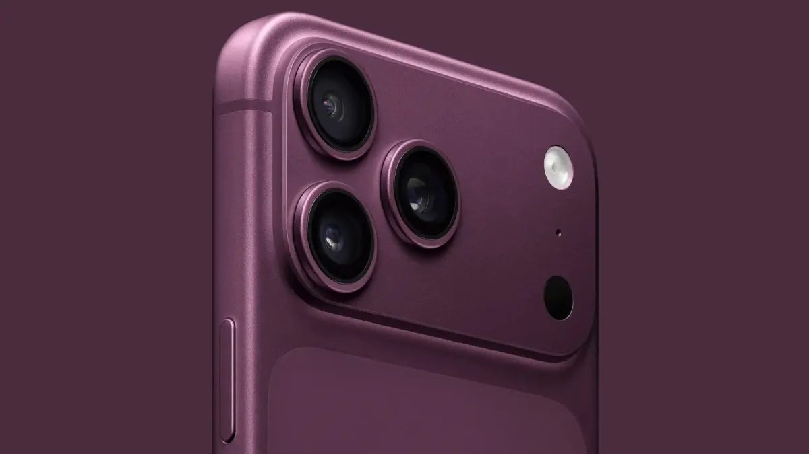

個人簡介
切版練習中的工作紀錄
我把網頁切版當成一件可以慢慢做完的工作。這段時間從表格、開放資料，練到 Row、Column，再練到 Flex 時間軸。我在意的是同一套欄位在手機和桌面都站得住，文字讀得完，顏色不要搶走內容。這頁不換頁，從上往下就是我目前的簡介、做過的頁面，以及怎麼學會這些排法。
工作經驗
三件實際做完的頁面，由近到遠。

2026.10 · 報表頁
餐廳基本資料
桌面用表格把名稱、圖片、地址、電話和簡介排在同一列。螢幕變窄時，表頭收起來，每一格靠自己的欄名還能讀。我先把兩筆範例站穩，再讓統計數字跟著實際列數走，不讓畫面上的「筆數」跟表格對不起來。

2026.10 · 資料頁
農業部開放資料
這一頁要先把資料請進來。請求寫在樣式表裡不會執行，頁面沒有載入 jQuery 時，$ 也不存在。這兩件事補上之後，旅遊食品資料才進得了主控台。我把「看得到資料」放在「排進表格」前面，避免畫面先做好、來源卻是空的。

2026.10 · 切版頁
保留欄位，只換內容
多欄練習的 Row 和 Column 不改，內容從色塊換成可讀的介紹。offset 是從上一格後面再往右推，不是從整列最左邊重算；推超過十二格，下一個區塊就會掉到下一列。後來同一套切版也拿來並排多座城市，每格用自己的顏色，欄位結構維持原樣。
學習歷程
排版觀念按學會的順序往下看。

表格與 RWD
窄螢幕仍要知道這一格是什麼
寬螢幕靠表頭說明欄位。表頭藏起來之後，每一格用 data-th 把欄名留在內容旁邊。我在這裡學會：響應式不是把欄位刪掉，而是換一種還讀得懂的排法。

十二欄
先算完一列，再談好不好看
Bootstrap 一列十二格。col 決定寬度，offset 決定這格前面還要空幾格。兩個區塊想並排，寬度加空白不能超過十二。這個算法後來變成我改切版時的第一個檢查。

Flex 時間軸
左右交錯，窄了就改靠左
中間那條軸用定位拉在列的中央，圓點再對準軸線。flex-row-reverse 讓下一則圖文對調，閱讀還是由上往下。寬度小於 md 時，軸線改到左側，圖和文字改成直向，不讓中線把句子切成兩半。